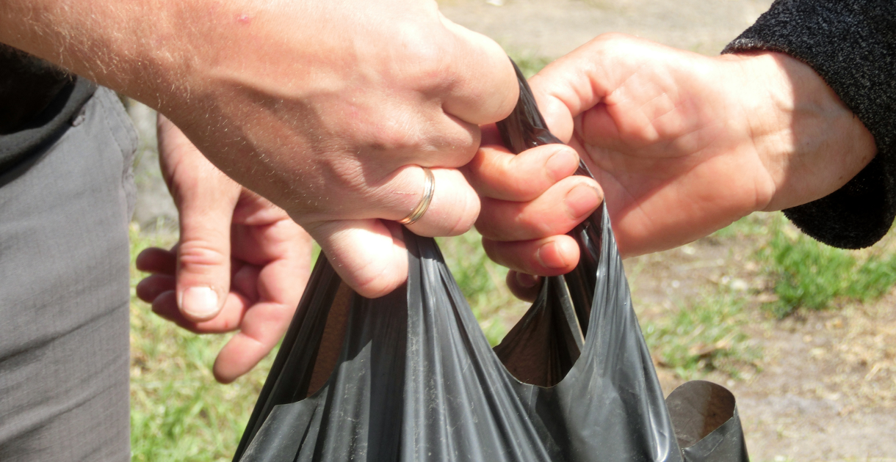

Буча розташована в лісовій зоні в 25 кілометрах від Києва, хоча якщо подивитися по карті, то межі міст поділяють близько 3-х кілометрів. Зі столицею її з’єднує хороша дорога, капітально відремонтована до Євро-2012. Місто оточує кілька інших населених пунктів – Ірпінь, Ворзель, Гостомель, Горенка і Пуща Водиця.
Буча розташована в лісовій зоні в 25 кілометрах від Києва, хоча якщо подивитися по карті, то межі міст поділяють близько 3-х кілометрів. Зі столицею її з’єднує хороша дорога, капітально відремонтована до Євро-2012. Місто оточує кілька інших населених пунктів – Ірпінь, Ворзель, Гостомель, Горенка і Пуща Водиця
Буча розташована в лісовій зоні в 25 кілометрах від Києва, хоча якщо подивитися по карті, то межі міст поділяють близько 3-х кілометрів. Зі столицею її з’єднує хороша дорога, капітально відремонтована до Євро-2012. Місто оточує кілька інших населених пунктів – Ірпінь, Ворзель, Гостомель.
Буча розташована в лісовій зоні в 25 кілометрах від Києва, хоча якщо подивитися по карті, то межі міст поділяють близько 3-х кілометрів. Зі столицею її з’єднує хороша дорога, капітально відремонтована до Євро-2012. Місто оточує кілька інших населених пунктів – Ірпінь, Ворзель, Гостомель.Буча розташована в лісовій зоні в 25 кілометрах від Києва, хоча якщо подивитися по карті, то межі міст поділяють близько 3-х кілометрів. Зі столицею її з’єднує хороша дорога, капітально відремонтована до Євро-2012. Місто оточує кілька інших населених пунктів – Ірпінь, Ворзель, Гостомель. Буча розташована в лісовій зоні в 25 кілометрах від Києва, хоча якщо подивитися по карті.
Буча розташована в лісовій зоні в 25 кілометрах від Києва, хоча якщо подивитися по карті, то межі міст поділяють близько 3-х кілометрів. Зі столицею її з’єднує хороша дорога, капітально відремонтована до Євро-2012. Місто оточує кілька інших населених пунктів – Ірпінь, Ворзель, Гостомель, Горенка і Пуща Водиця